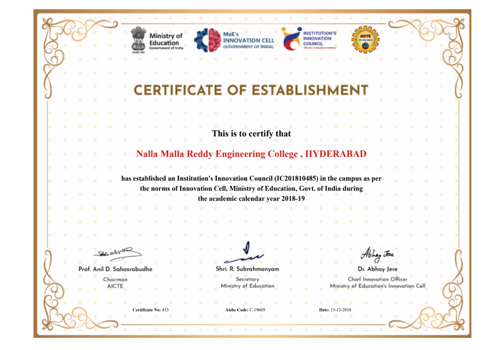
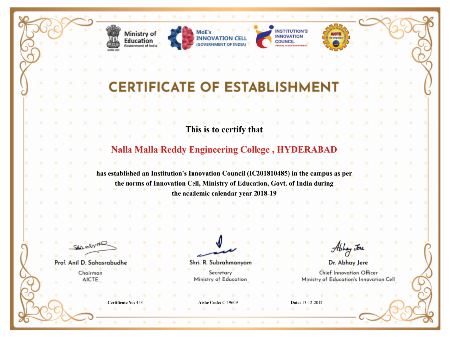
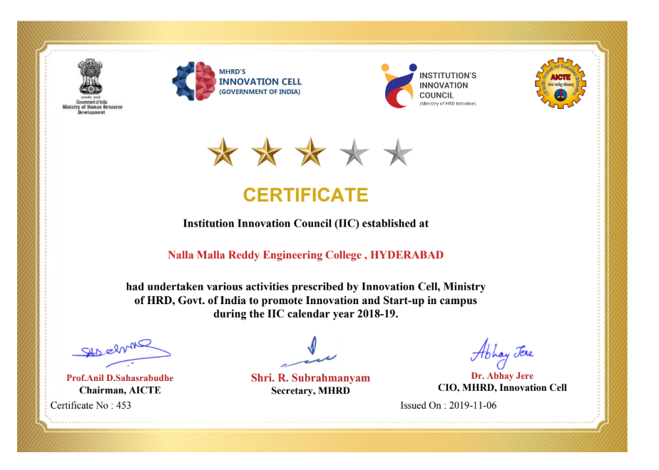
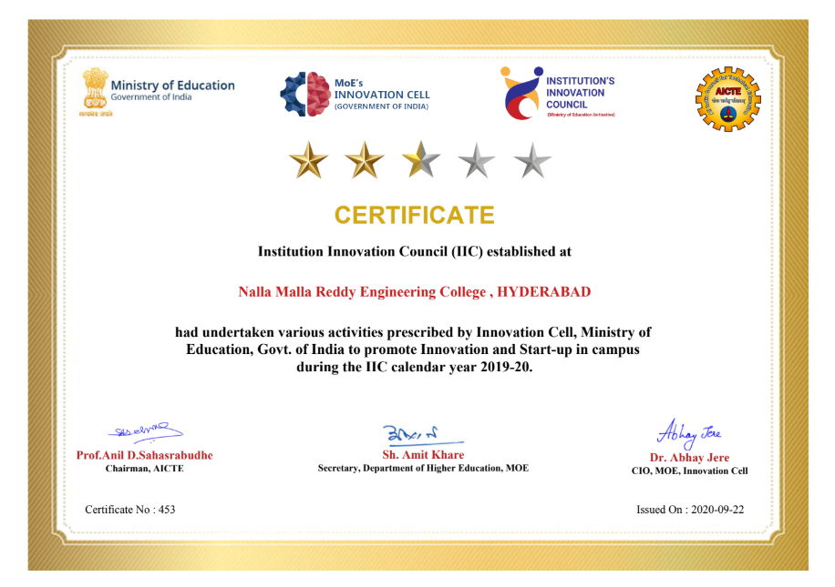
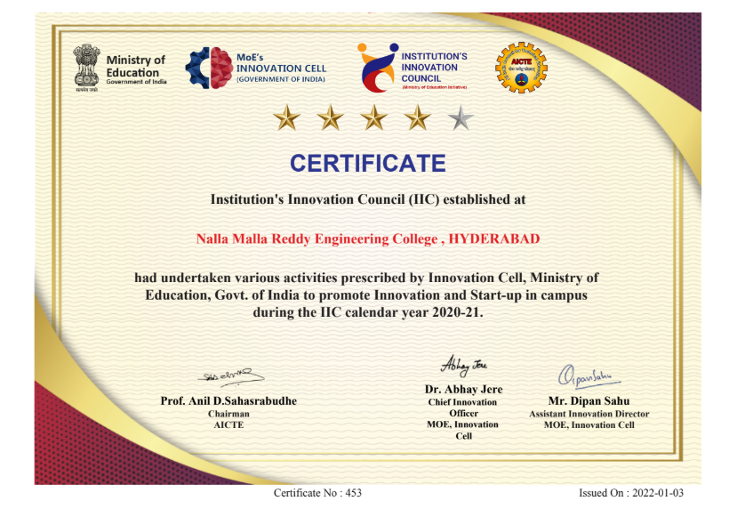
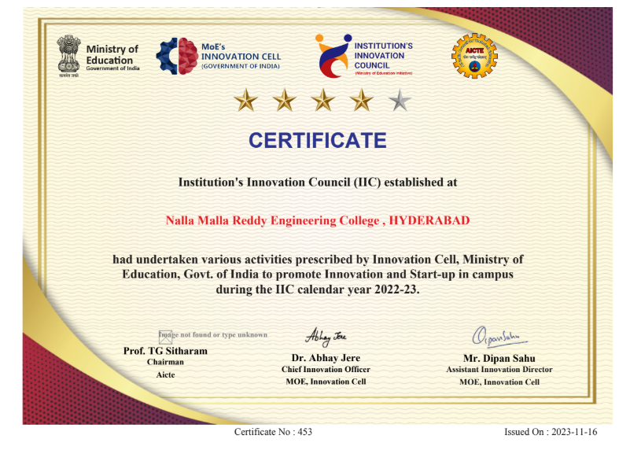

Centre for Innovation, Incubation and Entrepreneurship
The Centre for Innovation, Incubation, and Entrepreneurship at Nalla Malla Reddy Engineering College provides Pre-Incubation and Incubation services, offering office space with advanced computing facilities, managerial training, marketing support, patenting assistance, legal aid, design branding, technical mentorship, and access to state-of-the-art laboratories. A dedicated team of faculty, guided by the institution’s management, ensures the best resources for aspiring entrepreneurs. The centre aims to nurture entrepreneurial skills through training, product viability evaluation, and teamwork. It supports students, alumni, and early-stage startups with continuous mentoring from idea creation to business development. Collaborating with organizations like IIC-MHRD, T-Hub, IUCEE, EPICS (Purdue University), and J-Hub, it fosters innovation and entrepreneurship through its Innovation and Incubation Cell and Entrepreneurship Cell.
Entrepreneurship Development Cell – NMREC
The Entrepreneurship Development Cell (EDC) at Nalla Malla Reddy Engineering College (Autonomous) was established on 1st September 2012 to promote entrepreneurship, innovation, and self-employment among engineering graduates. Over 13 years, EDC has organized numerous field visits, entrepreneur interactions, and industrial exhibitions, leading to 40 students becoming successful entrepreneurs.
Events organized during 2022-23
- Workshop on Problem Solving & Ideation – 12th Sep 2022 (CSE, AI&ML)
- Novel Manufacturing Trend & 3D Printing for Industry 4.0 – 9th Nov 2022 (ME)
- Entrepreneurship & Innovation as a Career – 17th Nov 2022 (B.Tech 1st Year)
- Field Visit: Problem Identification – 1st-2nd Dec 2022 (HITEX, Hyderabad - ME)
- Field Visit: Innovations in Cold Storage – 3rd Dec 2022 (HITEX, Hyderabad - ME)
- Visit to TITA GLOBAL CONNECT, T-HUB – 16th Dec 2022
- Corporate Fuel Economy & E-Fuels – 17th Dec 2022 (ME, EEE)
- Business Innovation & Value Appropriation – 3rd Feb 2023 (ME, MBA)
- Fintech Trends & Opportunities – 27th Apr 2023 (MBA)
- Field Visit: Renewable Energy Startups – 28th-29th Apr 2023 (HITEX, Hyderabad - ME, EEE)
Events organised during 2023-24
- Interaction with Entrepreneur Mr. Surya Praveen (GM, Rotomaker VFX) – 21st Nov 2023 (B.Tech)
- Workshop on Entrepreneurship as a Career – 22nd June 2024 (In association with EDII, Ahmedabad)
Photos of the events


NMREC – Institution’s Innovation Council
In the Year 2018, Ministry of Education (MoE) through MoE’s Innovation Cell [MIC] launched the Institution’s Innovation Council (IIC) program in collaboration with AICTE for Higher Educational Institutions [HEIs] to systematically foster the culture of innovation and start-up ecosystem in education institutions. Primarily IIC’s role is to engage large number of faculty members and students in various innovation and entrepreneurship related activities such as ideation, problem solving, proof of concept development, Design Thinking, IPR, Project Handling and management at Pre-incubation / incubation stage, etc., so that innovation and entrepreneurship ecosystem gets established and stabilized in HEIs. Our Institution has started the Institution’s Innovation Council, right from the inception of the MoE’s launch i.e. from the year 2018. we have done several activities in IIC for the benefit of the students and to make them as Techpreneur rather than employee. Below Certificates are the Establishment and Achievements in IIC.






NMREC incubation Incubation Center
Government-approved startup incubator providing funding, mentorship, and infrastructure support.
Entrepreneurship Awareness Program
incubation – Development and Facilitation Office, Hyderabad, in association with IEEE Robotics Automation Society, conducted a One-Day Entrepreneurship Awareness Program on March 14, 2024. Led by Mr. Gulshan Bisht (Assistant Director, incubation DI, Hyderabad), Dr. Sudharshan Jayabalan (Chairman, IEEE RAS, Hyderabad), and Mounika Sakhinethi (Founder, IIIRPD), the workshop engaged NMREC students, identifying numerous aspiring entrepreneurs and fostering a dynamic community of future innovators.


Startup Ranking Framework 5.0
Dr. Movva Pavani, Professor of the ECE Department, and Mr. G.D. Siva Jagan, Assistant Professor from Nalla Malla Reddy Engineering College, participated in the Startup Ranking Framework 5.0 at T-Hub, Hyderabad on 30th April 2024. This event provided an excellent platform for startups and innovation centers focused on recent technologies. The forum brought together a diverse group of professionals, including scientists, entrepreneurs, and industry experts, to discuss the latest advancements and challenges in the field of technology and innovation.

T-Incubators Meet up
Dr. Movva Pavani, Professor of the ECE Department, and Mr. G.D.Siva Jagan, Assistant Professor from Nalla Malla Reddy Engineering College participated in T-Incubators Meet up at We Hub HQ, Road No: 45, Jubilee hills , Hyderabad on 29th May 2024 . This event provided an excellent platform for start-ups and innovation centres focused on new technologies The forum brought together a diverse group of professionals, including scientists, entrepreneurs, and industry experts, to discuss the latest advancements and challenges in the field of technology and Innovation.